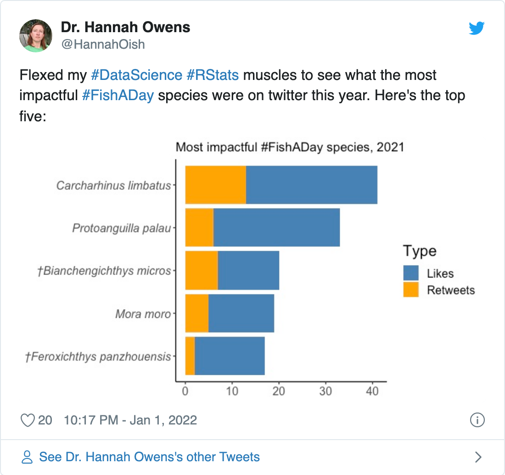
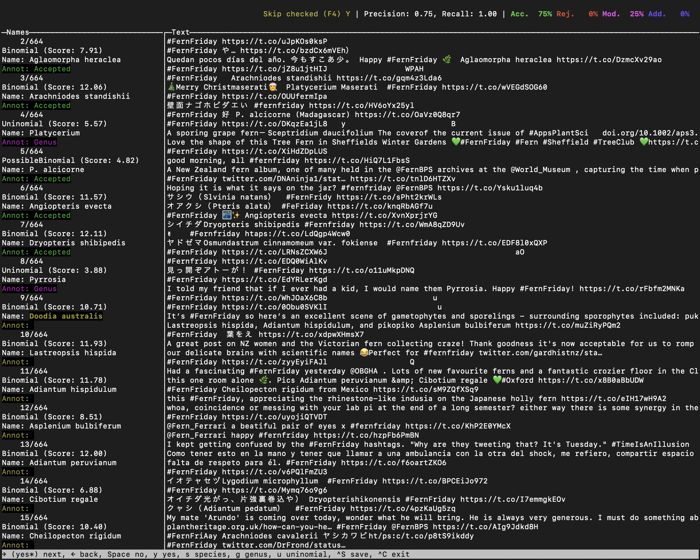

In which I answer the burning question on everybody’s minds: what was the most popular fern of 2021??
I show how to analyze #fernfriday tweets from 2021, including
snscrapergntaggerjsonliteFigure 1: Image by jewelie108 on pixabay.
One of the saving graces of twitter is the existence of things like #fernfriday and other hashtags of people’s favorite organisms.
Recently, @HannahOish posted this brief analysis of the #FishADay hashtag:

Upon seeing it, I immediately knew what I had to do next: find out the most popular fern species of #fernfriday in 2021!
First let’s load some packages.
There are at least two R packages to get twitter data in R, rtweet and tweetR
There is just one problem: they rely on the official twitter API, which is limited to tweets in the past week to 10 days or so, unless you want to shell out $$$ for a paid API account… which I don’t.
So I will get around this pesky problem by using the snscrape twitter scraper written in python 1.
snscrape can be installed using pip.
My preferred method for handling python is to use the conda environment manager. We can use pip within conda to install snscrape by writing an environment.yml file like this (thanks to @hansheng0512):
name: tweets-scraping
dependencies:
- python=3.8
- pip=21.1.3
- pip:
- git+https://github.com/JustAnotherArchivist/snscrape.gitOnce that is in your working directory, run this to create the environment:
conda env create -f environment.ymlNow snscrape should be installed and ready to use!
Since snscrape is a command-line interface (CLI), the normal way to use it would be to type commands from the command line. But this is an R blog, so let’s run it from R using the system() command 2 3.
# Set some variables, in case we want to modify the search later
DATE_START <- "2021-01-01"
DATE_END <- "2021-12-31"
HASHTAG <- "fernfriday"
JSON_FILENAME = "ff-2021-tweets"
# Compose the command for snscrape to retrieve tweets
command <- glue::glue('snscrape --jsonl --since {DATE_START} twitter-hashtag "{HASHTAG} until:{DATE_END}" > {JSON_FILENAME}.json')
# Run the command inside the conda env
system(
glue::glue(
"source ~/miniconda3/etc/profile.d/conda.sh ;
conda activate tweets-scraping ;
{command} ;
conda deactivate")
)
Now the tweets have been downloaded in JSON format to ff-2021-tweets.json.
We can load the tweets into R with the jsonlite package.
Found 500 records...
Found 1000 records...
Found 1345 records...
Imported 1345 records. Simplifying...Let’s take a peek at the data.
glimpse(ff_tweets_raw)
Rows: 1,345
Columns: 28
$ `_type` <chr> "snscrape.modules.twitter.Tweet", "snscrape…
$ url <chr> "https://twitter.com/bmoandkmo/status/14766…
$ date <chr> "2021-12-30T23:31:27+00:00", "2021-12-30T23…
$ content <chr> "the last #FernFriday of this year\n\nAmazi…
$ renderedContent <chr> "the last #FernFriday of this year\n\nAmazi…
$ id <dbl> 1.476697e+18, 1.476690e+18, 1.476681e+18, 1…
$ user <df[,23]> <data.frame[23 x 23]>
$ replyCount <int> 0, 0, 1, 0, 0, 0, 0, 1, 0, 0, 0, 0, 0, …
$ retweetCount <int> 1, 0, 1, 0, 0, 1, 0, 0, 5, 1, 0, 0, 3, 1, 1…
$ likeCount <int> 6, 3, 22, 4, 6, 7, 4, 35, 21, 27, 14, 15, 3…
$ quoteCount <int> 0, 0, 0, 0, 0, 0, 0, 1, 0, 0, 0, 0, 0, 0, 0…
$ conversationId <dbl> 1.476697e+18, 1.476690e+18, 1.476681e+18, 1…
$ lang <chr> "en", "und", "und", "und", "und", "und", "u…
$ source <chr> "<a href=\"https://mobile.twitter.com\" rel…
$ sourceUrl <chr> "https://mobile.twitter.com", "https://mobi…
$ sourceLabel <chr> "Twitter Web App", "Twitter Web App", "Twit…
$ outlinks <list> <NULL>, <NULL>, <NULL>, <NULL>, <NULL>, <NU…
$ tcooutlinks <list> <NULL>, <NULL>, <NULL>, <NULL>, <NULL>, <N…
$ media <list> [<data.frame[2 x 3]>], [<data.frame[1 x 3]…
$ retweetedTweet <lgl> NA, NA, NA, NA, NA, NA, NA, NA, NA, NA, NA…
$ quotedTweet <df[,28]> <data.frame[23 x 28]>
$ inReplyToTweetId <dbl> NA, NA, NA, NA, NA, NA, NA, NA, NA, NA, NA,…
$ inReplyToUser <df[,23]> <data.frame[23 x 23]>
$ mentionedUsers <list> <NULL>, <NULL>, <NULL>, <NULL>, <NULL>,…
$ coordinates <df[,3]> <data.frame[23 x 3]>
$ place <df[,6]> <data.frame[23 x 6]>
$ hashtags <list> "FernFriday", "FernFriday", <"FernFriday", …
$ cashtags <lgl> NA, NA, NA, NA, NA, NA, NA, NA, NA, NA,…There’s a lot of stuff in there! Let’s clean up the data a bit and just keep the useful bits.
ff_tweets <-
ff_tweets_raw %>%
as_tibble() %>%
select(
date, url, user, id,
content = renderedContent,
lang, coordinates, place,
contains("count")
) %>%
# Extract data from nested dataframes
mutate(
user = select(user, username, followersCount),
place = select(place, country),
coordinates = select(coordinates, longitude, latitude)
) %>%
unnest(c(user, place, coordinates)) %>%
clean_names()
ff_tweets
# A tibble: 1,345 × 14
date url username followers_count id content lang
<chr> <chr> <chr> <int> <dbl> <chr> <chr>
1 2021-1… https://… bmoandk… 79 1.48e18 "the last… en
2 2021-1… https://… ALULUAL… 203 1.48e18 "#FernFri… und
3 2021-1… https://… vatanek… 740 1.48e18 "#FernFri… und
4 2021-1… https://… ALULUAL… 203 1.48e18 "#FernFri… und
5 2021-1… https://… ALULUAL… 203 1.48e18 "#FernFri… und
6 2021-1… https://… ALULUAL… 203 1.48e18 "#FernFri… und
7 2021-1… https://… ALULUAL… 203 1.48e18 "#FernFri… und
8 2021-1… https://… duckinw… 1307 1.47e18 "Wishing … en
9 2021-1… https://… helecho… 208 1.47e18 "¡Felicid… pt
10 2021-1… https://… KOKESHI… 1506 1.47e18 "＃FernFr… en
# … with 1,335 more rows, and 7 more variables: longitude <dbl>,
# latitude <dbl>, country <chr>, reply_count <int>,
# retweet_count <int>, like_count <int>, quote_count <int>That’s better.
So getting our twitter data wasn’t that hard, now just to find all the fern species…
Uh-oh. This is easier said than done. Twitter doesn’t have a JSON field for fern species!
Luckily this post does have some biological content. For this task I will use gntagger. gntagger is a fantastic little CLI written in GO that handles exactly this sort of situation: it automatically detects species names in raw text 4.
Installation is quite simple as described in the gntagger docs, so I won’t go into that any more here.
gntagger requires a plain-text file as input, so let’s write out the tweets to a plain text file with one line per tweet:
ff_tweets %>%
# Replace line breaks with spaces so we get one tweet per line
mutate(content = str_replace_all(content, "\n", " ")) %>%
pull(content) %>%
write_lines("ff-2021-tweet-content.txt")
Now, open the text file with gntagger 5:
gntagger ff-2021-tweet-content.txtYou should see a screen that looks like this:

gntagger takes a “android” approach to tagging species names. It first uses its own algorithm to automatically identify all possible species names, then it has a simple user interface so the user can confirm or reject each candidate name rapidly. According to the gntagger docs, you should be able to get through about “4000 names spread over 600 pages in about 2 hours”. It took me around 10–15 min. for this dataset, which included 664 candidate names to process.
It saves the intermediate output to a folder named after the input file, in this case ff-2021-tweet-content.txt_gntagger.
I recommend trying out gntagger to see how it works—it definitely looks great for parsing names from old literature!
But you don’t have to go through all of the names yourself. In fact, gntagger’s initial “guesses” are pretty darn good, and can be used as-is for a rough analysis. Or, you can download the cleaned up version from FIXME: ADD LINK.
Let’s read in the gntagger results, which are again JSON:
ff_taxa_raw <- jsonlite::fromJSON("ff-2021-tweet-content.txt_gntagger/names.json")
ff_taxa <- ff_taxa_raw[["names"]] %>%
as_tibble() %>%
# I'll call the name output by gntagger "taxon", since
# not all of them are species
select(type, annotation, taxon = name, start, end)
ff_taxa
# A tibble: 630 × 5
type annotation taxon start end
<chr> <chr> <chr> <int> <int>
1 Binomial Accepted Elaphoglossum crinitum 430 452
2 Binomial Accepted Aglaomorpha heraclea 1230 1250
3 Binomial Accepted Arachniodes standishii 1325 1347
4 Uninomial Genus Platycerium 1398 1409
5 PossibleBinomial Accepted P. alcicorne 1562 1574
6 Binomial Accepted Angiopteris evecta 2457 2475
7 Binomial Accepted Dryopteris shibipedis 2508 2529
8 Uninomial Genus Pyrrosia 2914 2923
9 Binomial Accepted Doodia australis 3161 3178
10 Binomial Accepted Lastreopsis hispida 3189 3209
# … with 620 more rowsA bit about the column names we are reading in from gntagger:
type is something automatically defined by gntagger. I’m not quite sure what it means… but I’m guessing “Binomial” indicates that the name is a species.annotation is the annotation I selected during the tagging process. It includes values “Accepted”, “Genus”, “NotName”, “Species”, and “Uninomial”. It wasn’t totally clear to me how to apply these during the tagging part. I mostly just hit the forward arrow for names that looked like species, so those are annotated as “Accepted”. Towards the end I noticed I could select “Species”, so a few are annotated as “Species” instead of “Accepted” 6.start and end indicate the character position in the raw text matching the start and end of the name.The next step is to use the start and end fields to match species names to tweets. For that, we’ll need a tibble with the start and end position of each tweet.
ff_tweets_start_end <-
ff_tweets %>%
mutate(
# Replace line breaks with spaces so we get one tweet per line
content = str_replace_all(content, "\n", " "),
# Count number of characters per tweet
num_char = nchar(content)) %>%
select(id, num_char) %>%
# Calculate start and end of each tweet in characters
mutate(
end = cumsum(num_char),
start = end - num_char + 1,
start = as.integer(start)) %>%
select(id, start, end)
ff_tweets_start_end
# A tibble: 1,345 × 3
id start end
<dbl> <int> <int>
1 1.48e18 1 96
2 1.48e18 97 131
3 1.48e18 132 188
4 1.48e18 189 223
5 1.48e18 224 258
6 1.48e18 259 293
7 1.48e18 294 328
8 1.47e18 329 552
9 1.47e18 553 623
10 1.47e18 624 658
# … with 1,335 more rowsNow we can use the fuzzyjoin package to join the species names to the tweets by position.
ff_tweets_taxa <-
ff_tweets %>%
left_join(ff_tweets_start_end, by = "id") %>%
# interval_left_join requires the Bioconductor IRanges package to be installed
# and joins by columns "start" and "end" by default
interval_left_join(
ff_taxa
) %>%
select(-matches("start|end")) %>%
# Drop tweets without any fern names mentioned
filter(!is.na(taxon))
Let’s take a peek at the results.
select(ff_tweets_taxa, content, taxon)
# A tibble: 722 × 2
content taxon
<chr> <chr>
1 "Wishing all a happy, safe and peacefull #FernFri… Elaphoglossum c…
2 "Quedan pocos días del año.\n今年も残すところあと… Aglaomorpha her…
3 "#FernFriday \n\nArachniodes standishii https://t… Arachniodes sta…
4 "🎄🎉Merry Christmaserati🎅🎁\n\nPlatycerium Mase… Platycerium
5 "#FernFriday\n好き\nP. alcicorne (Madagascar) htt… P. alcicorne
6 "#FernFriday 🌃🌿✨\n\nAngiopteris evecta https:/… Angiopteris eve…
7 "シビイタチシダ Dryopteris shibipedis #Fernfriday… Angiopteris eve…
8 "シビイタチシダ Dryopteris shibipedis #Fernfriday… Dryopteris shib…
9 "✌️\n\n #Fernfriday https://t.co/LdQgp4Wcw0" Dryopteris shib…
10 "I told my friend that if I ever had a kid, I wou… Pyrrosia
# … with 712 more rowsYay! We’ve got fern names mapped to tweets (and user ID, etc). Notice that some tweets now appear duplicated, since our data are have one row per fern name mentioned, and some tweets may include multiple names.
OK, we can finally analyze the data and see who is the most popular fern of 2021!
Like any good data analysis, let’s check the distribution of the data first.
ff_tweets_taxa %>%
# Filter to only taxa that look like species names
filter(str_detect(type, "Binomial")) %>%
count(taxon) %>%
ggplot(aes(x = n, fill = n == 1)) +
geom_histogram(bins = 20) +
labs(fill = "Singleton") +
scale_fill_viridis_d() +
labs(x = "n species", y = "n tweets")
Figure 2: Histogram of species occurrences in tweets
So the vast majority of species are only tweeted about once (“singletons” in the plot), then there’s a longer tail of a much smaller number of species that receive multiple tweets. Sort of like ecology—common species are rare, and rare species are common. Neat.
Now that we have a feel for how the data are distributed, let’s see who are the rare species with multiple tweets. It’s possible that some users are tweeting the same species multiple times, and that seems sort of unfair right? So we will just consider one tweet per species per user, and look at the top 10.
ff_tweets_taxa %>%
# Filter to only taxa that look like species names
filter(str_detect(type, "Binomial")) %>%
# Only allow one "vote" per species per user
select(taxon, username) %>%
unique() %>%
# Just look at the top 10
# fct_lump_n() lumps the remainder into "Other"
mutate(taxon = fct_lump_n(taxon, n = 10)) %>%
# Exclude "Other"
filter(taxon != "Other") %>%
count(taxon) %>%
mutate(taxon = fct_reorder(taxon, n)) %>%
ggplot(aes(x = n, y = taxon)) +
geom_col() +
labs(x = "n users tweeting") +
theme(axis.title.y = element_blank())
Figure 3: Top 10 species by number of users tweeting
Cool! Those are some solid picks. And the top 10 species here all include > 3 three unique users tweeting about them.
What about the most popular genera?
ff_tweets_taxa %>%
# Split species names into genus and specific epithet
separate(
taxon, into = c("genus", "specific_epithet"), sep = " ",
fill = "right", extra = "drop") %>%
# Exclude names that I annotated as "Uninomial" (family names)
filter(annotation != "Uninomial") %>%
# Exclude abbreviated genera ("P.", etc)
mutate(n_genus_char = nchar(genus)) %>%
filter(n_genus_char > 3) %>%
# Only allow one "vote" per species per user
select(genus, username) %>%
unique() %>%
# Just look at the top 10
# fct_lump_n() lumps the remainder into "Other"
mutate(genus = fct_lump_n(genus, n = 10)) %>%
# Exclude "Other"
filter(genus != "Other") %>%
count(genus) %>%
mutate(genus = fct_reorder(genus, n)) %>%
ggplot(aes(x = n, y = genus)) +
geom_col() +
labs(x = "n users tweeting") +
theme(axis.title.y = element_blank())
Figure 4: Top 10 genera by number of users tweeting
The trends change a bit: although no single Asplenium species gets lots of tweets, the genus as whole does. Cool!
There is obviously a lot that can be done with twitter data, and text data in general. I won’t be going there. But I just want to look at one more thing…
Who are the most prolific #fernfriday tweeters?
ff_user_count <-
ff_tweets %>%
count(username) %>%
mutate(username = fct_reorder(username, n))
ggplot(ff_user_count, aes(x = n, y = username)) +
geom_col(aes(fill = n == 1)) +
# Only label the top 10
geom_label_repel(
data = slice_max(ff_user_count, order_by = n, n = 10),
aes(label = username),
force = 3,
box.padding = 0.5,
min.segment.length = 0,
max.overlaps = Inf,
direction = "y") +
# ... plus me
geom_label_repel(
data = filter(ff_user_count, username == "joel_nitta"),
fill = "light blue",
min.segment.length = 0,
aes(label = username)) +
scale_fill_viridis_d() +
scale_x_continuous(expand = c(0,0)) +
labs(x = "n tweets", fill = "Singleton") +
theme(
axis.text.y = element_blank(),
axis.ticks.y = element_blank(),
legend.position = "bottom")
Figure 5: Number of #fernfriday tweets per user
Wow, some people are really on top of this hashtag! I recognize some of these… @ALULUALULU_M takes really nice photos, and @ja_pelosi has been posting informative threads about one fern family per week at #51WeeksOfPteridophytes.
Again we see a similar pattern to species: there are a small number of very regular #fernfriday tweeters, then a long tail of those who use the hashtag only occasionally… or just once (ahem)!
Well I might not have the most #fernfriday tweets, but I think I’m definitely in the running for best #fernfriday blogpost :)
This is probably not within twitter’s user guidelines, so use at your own discretion↩︎
A good way to limit the number of hits when you are testing code is with the --max-results option, e.g., --max-results 10↩︎
Again, inspired by @hansheng0512’s code↩︎
OK it was probably designed more with old biodiversity literature in mind and not twitter, but it works fine either way!↩︎
You may need to execute this with ./gntagger if you didn’t make gntagger executable everywhere by putting it on your PATH↩︎
I actually think using a single variable for both taxonomic status (“Accepted”) and rank (“Species”, “Genus”, etc) is rather confusing, and have filed an issue about this↩︎
If you see mistakes or want to suggest changes, please create an issue on the source repository.
Text and figures are licensed under Creative Commons Attribution CC BY 4.0. Source code is available at https://github.com/joelnitta/joelnitta-home, unless otherwise noted. The figures that have been reused from other sources don't fall under this license and can be recognized by a note in their caption: "Figure from ...".
For attribution, please cite this work as
Nitta (2022, Jan. 24). Joel Nitta: #fernfriday 2021. Retrieved from https://joelnitta.com/friday-ferns-2021
BibTeX citation
@misc{nitta2022#fernfriday,
author = {Nitta, Joel},
title = {Joel Nitta: #fernfriday 2021},
url = {https://joelnitta.com/friday-ferns-2021},
year = {2022}
}